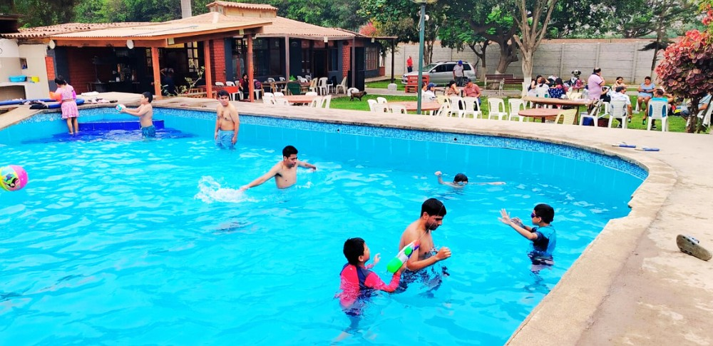

Restaurante campestre, piscina, platos típicos, hospedaje, bungalows, camping, eventos y alquiler de equipos de sonido.
En Rinconcito Ancashino encontrarás comida típica, áreas verdes, piscina gratis para clientes, hospedaje, bungalows, camping y espacios para celebrar momentos inolvidables.

Conoce experiencias reales de clientes que visitaron Rinconcito Ancashino.